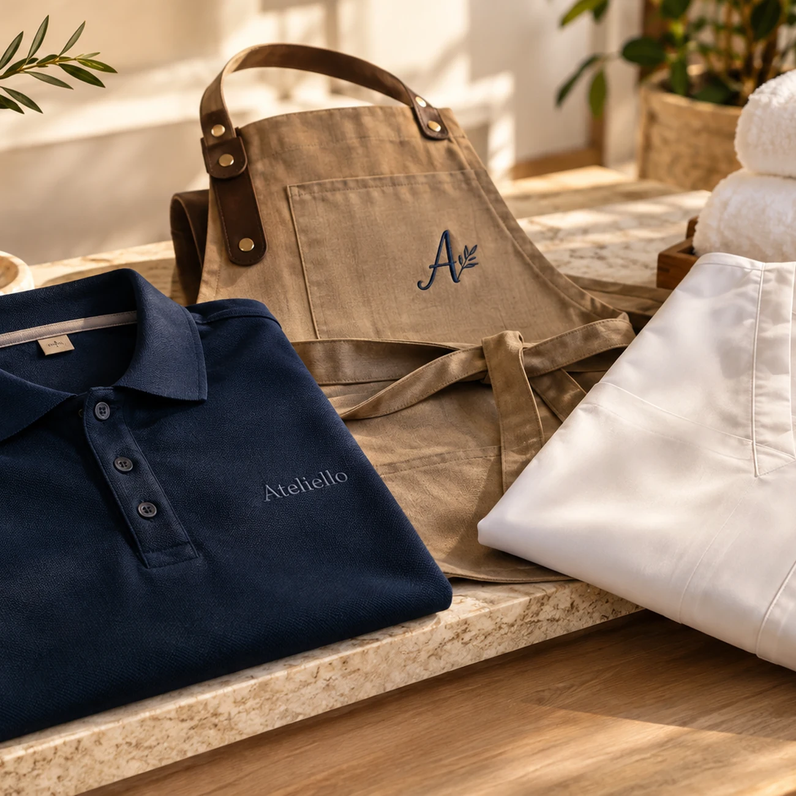

Entendemos sua rotina
Uma cafeteria exige escolhas diferentes de uma clínica. Conversamos sobre ambiente, frequência de uso, apresentação e conforto antes de propor a peça.
De uma equipe que está começando a uma operação em crescimento: polos, camisetas, aventais e jalecos com bordado de logotipo, nome e identificação profissional. Projeto, tecidos e quantidades avaliados juntos.
Atendimento online · Orçamento antes da produção · Tecido e acabamento avaliados

Uma cafeteria exige escolhas diferentes de uma clínica. Conversamos sobre ambiente, frequência de uso, apresentação e conforto antes de propor a peça.
Recebemos logotipo ou referência, definimos posição do bordado, cores, grade de tamanhos e quantidade. A aprovação técnica antecede a produção.
A fabricação empresarial segue uma organização por lotes, com repetibilidade do bordado, controle das informações e previsão de entrega confirmada após o orçamento.
Pedidos pequenos ou maiores podem ser avaliados conforme a peça, tecido, arte e viabilidade. A Ateliello não promete um mínimo universal para todas as opções.
Podemos estudar opções de fornecimento ou analisar peças próprias. A adequação depende da composição, estrutura, costuras e local do bordado.
O preço varia com o tecido, quantidade, tamanho e complexidade do bordado, preparação da arte e urgência. Você recebe a proposta para aprovação antes do início.
Depois de analisar quantidade, grade de tamanhos, disponibilidade dos materiais e capacidade de produção, informamos o prazo possível.
Conte a quantidade, a profissão e o que imagina para sua marca. O atendimento começa online e segue com uma proposta sob medida.